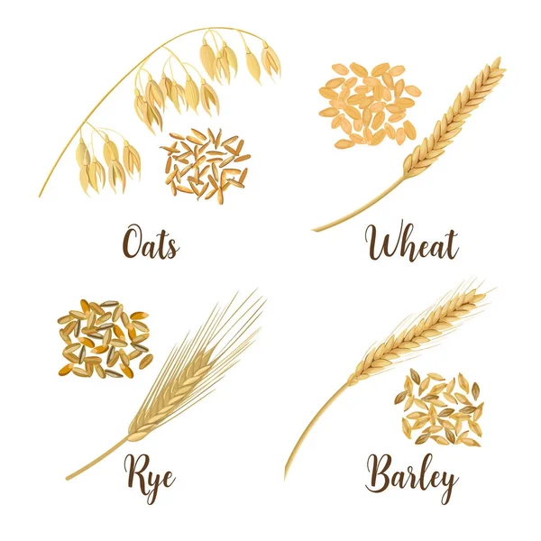
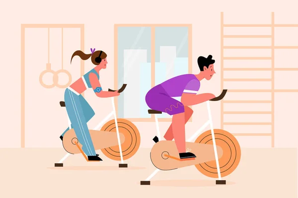

1. Eat more vegetables

2. Swap in whole grains

3. Be more active
4. Maintain friendships
5. Control stress
Ask 50 people to define what a “healthy lifestyle” is, and you’ll likely get 50 different answers. That’s because there’s no one way to be healthy. A healthy lifestyle simply means doing things that make you happy and feel good.
For one person, that may mean walking a mile five times a week, eating fast food once a week, and spending virtual or in-person time with loved ones every other day. For someone else, a healthy lifestyle may be training and running two marathons a year, following a keto diet, and never having a sip of alcohol.
1. Eat more vegetables
2. Swap in whole grains
3. Be more active
4. Maintain friendships
5. Control stress
A 2010 analysis of prospective studies suggests consuming more veggies and fruit is associated with lower risk of heart disease, stroke, cancer, and premature death.
Although eating more vegetables is better, you don’t have to go from zero to nine servings a day. Perhaps your goal is eating one serving of vegetables at dinner. If you already do that, consider eating one vegetable or fruit at every meal.
Keep in mind that less-processed veggies are better. Rather than fries, try roasted potatoes seasoned with herbs or make a stir-fry of several colorful vegetables and drizzle them with a tasty vinaigrette.
Replacing refined grains with whole grains will benefit your health.
In a small 2017 study, 81 men and postmenopausal women were divided into two groups. Half followed a diet that contained whole grains, and the other half followed a diet that was calorically the same but contained refined grains. After 6 weeks, the whole grain group increased their resting metabolic rate (RMR). RMR is how many calories your body burns at rest.
Start small by replacing one refined grain each day with a whole grain — maybe it’s your breakfast toast or the pilaf you make with dinner. Experiment with different grains and flavorings to see which ones you enjoy most.
If the words “exercise” or “workout” put you off, think of this step in terms of physical activity or simply moving your body.
You could walk, go for a bike ride, take salsa dancing lessons, practice martial arts, or try a workout class online. The most important thing is to choose an activity you enjoy.
Choosing an activity you have an interest in will increase the chances that you’ll stick with it.
Secondly, remember that you don’t have to start with a long workout. Aim for 10 minutes a day, 5 days a week. When you feel ready, add another 5 or 10 minutes. Keep doing this until you reach at least 30 minutes a day most days of the week.
Strong relationships and staying in communication with friends and loved ones can support mental health.
For one, the risk of depression is greater in people with low-quality relationships. Those with the poorest quality social relationships have more than double the risk of depression compared to people with the highest quality connections.
Similarly, research suggests feeling isolated is associated with an increased risk of poor self-rated health and depression. It is also associated with various health problems, like headaches, palpitations, and lower back, neck, or shoulder pain.
Chronic stress puts your body into fight-or-flight mode all the time. This taxes your immune system and makes you more susceptible to health problems, including:
heart disease
digestive problems
depression
high blood pressure
anxiety
difficulty sleeping
Exercise can help reduce stress by releasing pent-up energy. Physical activity can also boost the release of mood-lifting hormones called endorphins.